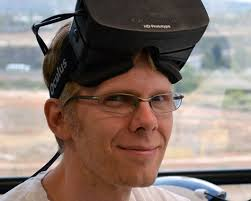
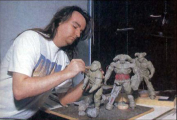

Creative Minds |
||
|  |  |
 |
John Carmack |
John Romero |
Adrian Carmack |
The two Johns and Adrian were the main creative force behind the first two Doom games. Each contributed a great deal to the games that it would be considered blasphemy to the Doom world if one of these men were ommited out as a reason for Doom's success. John Carmack was the main programmer for the game who developed many of the key features for Doom, including the then unheard of Dynamic Lighting feature of the game, which set Doom apart from the rest of the games out at the time. John Romero was the chief level designer, designer many of the games infamous levels . Romero also developed the software, DoomEd, used to make Doom, which to this day is the basis for the popular Doom Builder, a program used to create and modify levels for Doom. Adrian Carmack was the chief designer for the first two Doom games, creating models of some of the most iconic monsters in video game history. Adrian is the main reason why Doom looks the way it does and without him Doom might have slipped into video game obscurity. |
||